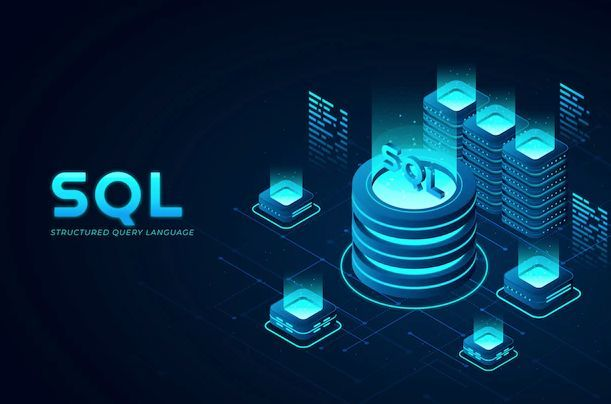

Um banco de dados é uma coleção organizada de informações ou dados, armazenados de forma estruturada e sistemática, para que possam ser facilmente acessados, consultados, atualizados e gerenciados por meio de um sistema computacional. Ele funciona como um grande arquivo digital que centraliza informações e permite que vários usuários e sistemas trabalhem com os mesmos dados de forma segura e eficiente.
Para gerenciar um banco de dados, usamos um software chamado SGBD — Sistema de Gerenciamento de Banco de Dados, que é responsável por controlar o acesso, a segurança, a integridade e a manipulação dos dados.
Todo banco de dados é formado por elementos fundamentais:

Praticamente todo sistema computacional usa banco de dados. Veja os principais exemplos:
Cadastro de produtos, clientes, estoque e histórico de vendas.
Matrículas, notas, frequência, cadastro de alunos e professores.
Contas, transações, saldos, pagamentos e movimentações financeiras.
Perfis, postagens, comentários, conexões e mensagens dos usuários.
Prontuários, agendamentos, receitas e histórico de pacientes.
Controle de entregas, rotas, estoque e rastreamento de pedidos.
O banco de dados é o coração de qualquer sistema de informação! Sem ele, não há como guardar nem consultar informações de forma organizada. Dominar essa área é essencial para quem trabalha com tecnologia. É uma das competências mais procuradas no mercado de trabalho — empresas de todos os ramos precisam de profissionais que saibam criar, gerenciar e consultar bancos de dados.
Na ETEC, a disciplina de Banco de Dados ensina na prática a: